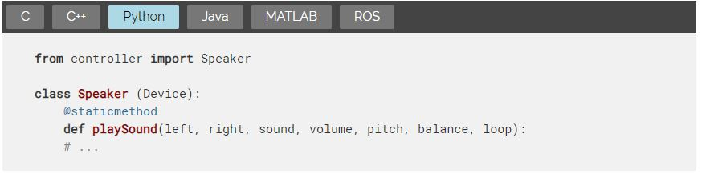
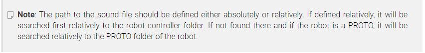
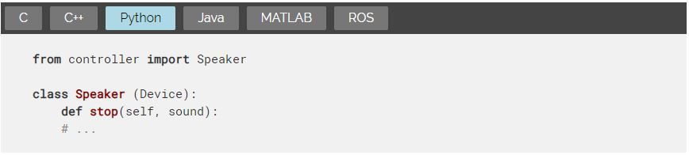
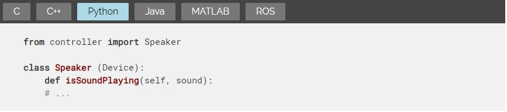
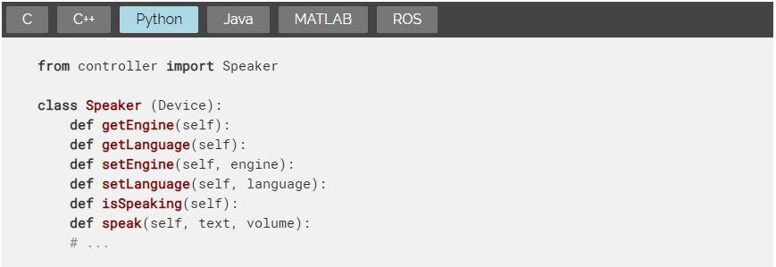
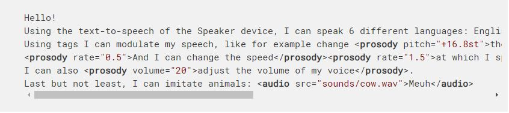

RotationalMotor <<
Previous Next >> Track
Speaker
揚聲器
Derived from Device and Solid.
源自設備和實體。
Index 指數
Description 描述
Speaker Functions 揚聲器功能
wb_speaker_play_sound 播放聲音
wb_speaker_stop 停止
wb_speaker_is_sound_playing 聲音播放
wb_speaker_set_engine 設置引擎
wb_speaker_set_language 設置語言
wb_speaker_get_engine 獲得引擎
wb_speaker_get_language 獲得語言
wb_speaker_is_speaking 演講者在說話
wb_speaker_speak 演講者說話
Description 描述
The Speaker node represents a loudspeaker device that can be embedded onboard a robot or standing in the environment. It can be used to play sounds and perform text-to-speech from the controller API.
揚聲器節點表示可以嵌入到機器人上或站在環境中的揚聲器設備。 它可用於播放聲音和從控制器API執行文本到語音轉換。
Speaker Functions 揚聲器功能
Description 描述

plays a sound 播放聲音
This function allows the user to play a sound file. All major audio formats are supported, such as MP3, AIFF, AAC, WAV, FLAC and OGG Vorbis. For an exhaustive list, see here.
該功能允許用戶播放聲音文件。支持所有主要的音頻格式，例如MP3，AIFF，AAC，WAV，FLAC和OGG Vorbis。有關詳細列表，請參見此處。
The function take as arguments two speaker WbDeviceTag respectively for the left and right channels. If both channels should be played on the same speaker or the file has only one channel, it is possible to pass the same device tag for both left and right arguments. Alternatively, if one channel should be ignored, it is possible to pass 0 instead of one of the two tags.
該函數分別為左右聲道使用兩個揚聲器WbDeviceTag作為參數。如果兩個通道都應在同一揚聲器上播放，或者文件只有一個通道，則可以為左參數和右參數傳遞相同的設備標籤。或者，如果應忽略一個通道，則可以傳遞0而不是兩個標籤之一。
The sound argument specifies the path to the sound file that should be played. The volume argument allows the user to specify the volume of this sound (between 0.0 and 1.0). The pitch argument allows the user to modify the pitch of the sound, the default sound pitch is multiplied by the pitch argument. The pitch argument should be positive. A value of 1.0 means no pitch change. The balance argument allows the user to specify the balance between the left and the right speaker (between -1.0 and 1.0). A value of 0 means no balance: both channels have the same volume. A value of -1.0 means that the right channel is muted. A value of 1.0 means that the left channel is muted. Intermediate values define a difference of volume between the left and right channels. Finally, the boolean loop argument defines if the sound will be played only once or repeatedly.
sound參數指定應播放的聲音文件的路徑。 volume參數允許用戶指定此聲音的音量（介於0.0和1.0之間）。音高參數允許用戶修改聲音的音高，默認音高乘以音高參數。間距參數應為正。值1.0表示音高不變。 balance參數使用戶可以指定左右揚聲器之間的平衡（在-1.0和1.0之間）。值為0表示沒有平衡：兩個通道的音量相同。值-1.0表示右聲道已靜音。值1.0表示左聲道已靜音。中間值定義左右聲道之間的音量差異。最後，布爾循環參數定義聲音是只播放一次還是重複播放。
It is possible to change the volume, pitch, balance, and loop parameters of a sound currently playing by calling again the wb speaker play sound function with the same speakers and sound arguments.
通過使用相同的揚聲器和聲音參數再次調用wb speaker play sound函數，可以更改當前正在播放的聲音的音量，音調，平衡和循環參數。

wb speaker stop

wb speaker is sound playing

Description 描述
check if the sound is been played
This function can be used to check if the given sound is currently playing. It can be used for example to check when a sound is over. It is possible to check if the speaker is playing any sound (including text-to-speech) by setting sound to NULL (or to an empty string in object-oriented APIs).
檢查是否播放了聲音
此功能可用於檢查給定聲音是否正在播放。 例如，它可以用於檢查聲音何時結束。 通過將聲音設置為NULL（或在面向對象的API中設置為空字符串），可以檢查揚聲器是否正在播放任何聲音（包括文本到語音）。
wb_speaker_set_engine
wb_speaker_set_language
wb_speaker_get_engine
wb_speaker_get_language
wb_speaker_is_speaking
wb_speaker_speak

Description 描述
perform text-to-speech 執行文字轉語音
The wb_speaker_set_engine function allows the user to set the text-to-speech engine that is going to be used by a speaker. The engine parameter should be one of the following values:
wb_speaker_set_engine函數允許用戶設置演講者將使用的文本語音轉換引擎。 引擎參數應為以下值之一：
- "pico"for the SVOX Pico text-to-speech engine (default value).
- "microsoft"for the Microsoft SAPI5 text-to-speech engine (only available on Windows).
- SVOX Pico文本到語音引擎的“ pico”（默認值）。
- Microsoft SAPI5文本到語音引擎的“ microsoft”（僅在Windows上可用）。
The function returns false if the engine cannot be set and true otherwise.
如果無法設置引擎，則該函數返回false，否則返回true。
The wb_speaker_get_engine function allows the user to get the text-to-speech engine for a speaker device.
wb_speaker_get_engine函數允許用戶獲取揚聲器設備的文本語音轉換引擎。
The wb_speaker_set_language function allows the user to set the language of the current text-to-speech engine. For the "pico" engine, the language parameter should be set to one of the following values:
- "en-US"for American English (default value).
- "en-UK"for British English.
- "de-DE"for German.
- "es-ES"for Spanish.
- "fr-FR"for French.
- "it-IT"for Italian.
wb_speaker_set_language函數允許用戶設置當前文本語音轉換引擎的語言。 對於“ pico”引擎，應該將language參數設置為以下值之一：
美國英語為“ en-US”（默認值）。
“ en-UK”代表英式英語。
“ de-DE”代表德語。
“ es-ES”（西班牙語）。
“ fr-FR”（法語）。
“ it-IT”（意大利語）。
For the "microsoft" engine, it should follow the same format and correspond to an existing language, installed on the Windows computer. The format is "ll-CC" where ll (lowercase) corresponds to an ISO 639-1 language code and CC (uppercase) corresponds to an ISO 3166 country code, like for example "en-US" or "fr-FR".
對於“ microsoft”引擎，它應採用相同的格式並與Windows計算機上安裝的現有語言相對應。格式為“ ll-CC”，其中ll（小寫）對應於ISO 639-1語言代碼，CC（大寫）對應於ISO 3166國家/地區代碼，例如“ en-US”或“ fr-FR”。
The function will return true on success and false if it failed to set the requested language for the current engine.
如果成功，該函數將返回true；如果未能為當前引擎設置請求的語言，則該函數將返回false。
The wb_speaker_get_language function allows the user to get the language of the text-to-speech for a speaker device.
wb_speaker_get_language函數允許用戶獲取揚聲器設備的文本到語音的語言。
The wb_speaker_is_speaking function will return true if the speaker is currently performing text-to-speech. It can for example be used to check that the previous sentence is over before starting a new sentence.
如果揚聲器當前正在執行文本到語音轉換，則wb_speaker_is_speaking函數將返回true。例如，它可以用於在開始新句子之前檢查先前的句子是否結束。
The wb_speaker_speak function allows the user to execute text-to-speech on the speaker. The value of the text parameter is converted into sound by Webots using the engine specified by the wb_speaker_set_engine function and the language specified by the wb_speaker_set_language function. The resulting sound is played through the specified speaker. The specified text could be plain text including punctuation signs such as "Hello world!", or can be enriched with special effects to make it more realistic. Such effects are specified with XML tags compliant with the SSML (Speech Synthesis Markup Language) standard. Here is a list of SSML tags that are supported by both the pico and the microsoft engines. Additional tags and parameters may be supported by the microsoft engine. Please refer to the Microsoft Speech API (SAPI) documentation about it.
wb_speaker_speak函數允許用戶在揚聲器上執行文本到語音轉換。 Webots使用wb_speaker_set_engine函數指定的引擎和wb_speaker_set_language函數指定的語言將text參數的值轉換為聲音。產生的聲音通過指定的揚聲器播放。指定的文本可以是包含標點符號（例如“ Hello world！”）的純文本，也可以添加特殊效果以使其更加真實。這些效果是通過符合SSML（語音合成標記語言）標準的XML標籤指定的。這是pico和Microsoft引擎都支持的SSML標籤的列表。 Microsoft引擎可能支持其他標籤和參數。請參考有關它的Microsoft Speech API（SAPI）文檔。
SSML Text-to-speech XML tags supported bythe pico and microsoft engines
pico和Microsoft引擎支持的SSML文本到語音XML標籤
- prosodyhas three supported parameters: pitch, rate and volume:
- 韻律具有三個受支持的參數：音調，速率和音量：
- pitch is a relative value expressed as a number preceded by + or - and followed by st, that specifies an amount to change the pitch. For example -2st. The st suffix indicates the change unit is semitone, which is half of a tone (a half step) on the standard diatonic scale.
- pitch是一個相對值，表示為一個數字，該數字前面帶有+或-併後面帶有st，它指定一個更改音調的量。例如-2st。後綴st表示更改單位是半音，是標準全音階音調的一半（半音階）。
- rate indicates the speaking rate (speed) of the contained text. This is a relative value, expressed as a number that acts as a multiplier of the default. For example, a value of 1 results in no change in the rate. A value of .5 results in a halving of the rate. A value of 3 results in a tripling of the rate.
- rate表示所包含文本的語速（速度）。這是一個相對值，表示為充當默認值乘數的數字。例如，值為1不會導致速率變化。值5導致速率減半。值3導致速率增加三倍。
- volume indicates the volume level of the speaking voice. This value should be expressed as a number in the range of 0 to 100, from quietest to loudest. For example, 75. The default is 100.
- 音量表示語音的音量。此值應表示為從0到100的數字，範圍從最安靜到最大。例如75。默認值為100。
- audio has one supported parameter which is src, specifying a WAV file. This results in the insertion of the specified sound file in the synthesized signal at the place specified in the input text.
- audio具有一個受支持的參數，即src，用於指定WAV文件。這導致在合成信號中在輸入文本中指定的位置處插入指定的聲音文件。
Example 例如:

RotationalMotor <<
Previous Next >> Track